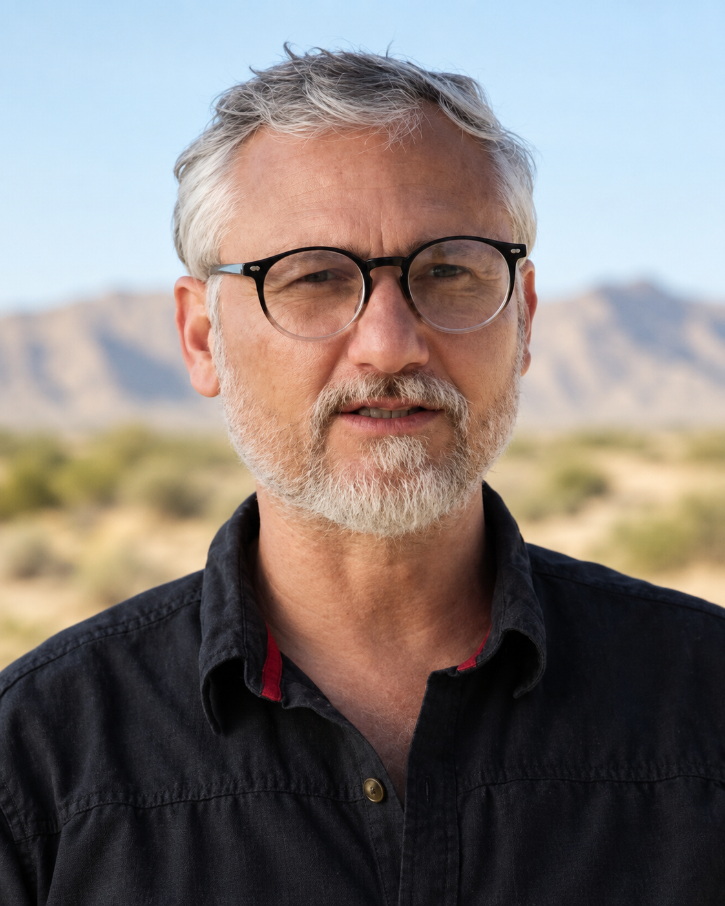

Lexicografía
Diccionarios, recursos lexicográficos y herramientas digitales.
Página personal
Lingüista · Lexicógrafo · Editor · Docente
Soy lingüista, lexicógrafo, editor y docente peruano. Mi trabajo se centra en las lenguas indígenas, especialmente el quechua, la lexicografía, las políticas lingüísticas y la revitalización. He desarrollado mi trayectoria entre la investigación, la gestión pública, la docencia universitaria y la producción y edición de recursos lingüísticos.

Áreas de trabajo
Diccionarios, recursos lexicográficos y herramientas digitales.
Documentación, revitalización, derechos lingüísticos y educación.
Políticas públicas, planificación lingüística y derechos lingüísticos.
Edición, corrección y acompañamiento editorial de textos académicos, técnicos, de divulgación y creación literaria.
Escritura y edición sobre historia del surfing peruano, patrimonio costero y conservación de rompientes.
Publicaciones
Publicaciones académicas y lexicográficas, trabajos editoriales y una línea de divulgación sobre surf, cultura marítima y patrimonio costero.
Ver publicacionesDocencia
Docencia universitaria y formación en lenguas indígenas, lexicografía, políticas lingüísticas y revitalización.
Ver docencia